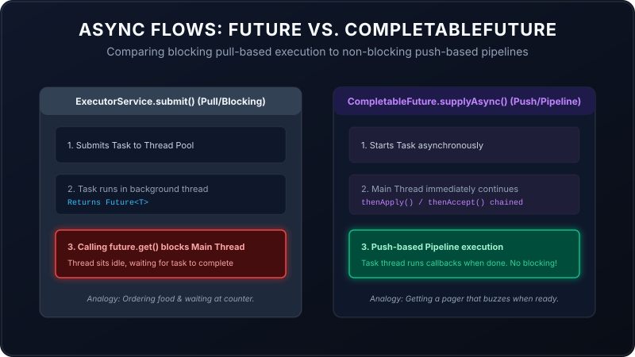

Asynchronous programming is like ordering food at a restaurant. You place an order, the kitchen prepares it in the background, and eventually, the food arrives at your table. But *how* you wait for that food changes your entire experience.
In Java, we have two main ways of handling background tasks: the traditional ExecutorService.submit() and the modern CompletableFuture.supplyAsync(). While both execute tasks asynchronously, they handle results in completely different ways. In this guide, we will break down their differences using simple analogies, justify them with code, and explain how to handle failures gracefully in the modern pipeline model.

1. ExecutorService.submit(): The "Stand-and-Wait" Model
With ExecutorService, when you submit a task, you get a receipt called a Future. To get the result, you must call future.get().
The Analogy: You order a burger at a counter. The cashier hands you a order ticket. But to get the burger, you must stand right in front of the counter, blocking the line, doing absolutely nothing else until the burger is placed in your hands. If the burger takes 10 minutes, you are frozen in place for 10 minutes.
Code Example:
ExecutorService executor = Executors.newFixedThreadPool(2);
Future future = executor.submit(() -> {
Thread.sleep(2000); // Simulate database fetch
return "User Account Data";
});
// This call BLOCKS the main thread!
// Nothing below this line executes until the 2 seconds pass.
String result = future.get();
System.out.println("Processing: " + result); 2. CompletableFuture.supplyAsync(): The "Pager Ticket" Model
With CompletableFuture, you don't call a blocking .get(). Instead, you register callback steps (like .thenApply() or .thenAccept()) that describe what to do with the result once it arrives.
The Analogy: You order the burger, and the cashier hands you a buzz pager. You sit at a table, read a book, check your phone, and drink water. The moment the burger is ready, the pager buzzes and the waiter brings it directly to your table. You were never blocked.
Code Example:
CompletableFuture.supplyAsync(() -> {
// Runs in the background (ForkJoinPool.commonPool)
return "User Account Data";
})
.thenApply(data -> data + " (Processed)") // Runs on completion (Non-blocking!)
.thenAccept(result -> System.out.println("Displaying: " + result));
// The main thread continues running other code immediately here!Chaining Tasks (Sequential vs. Parallel)
What if you want to perform multiple operations? For example, fetch user credentials, verify their bank balance, and send an email.
- thenCompose() (Sequential): Run Task B *after* Task A finishes, using Task A's output.
CompletableFuture.supplyAsync(() -> "User_12") .thenCompose(userId -> fetchBalanceAsync(userId)) // Wait for balance .thenAccept(balance -> System.out.println("Balance: " + balance)); - thenCombine() (Parallel): Run Task A and Task B in parallel, and merge their results when both are ready.
CompletableFuturedoc = CompletableFuture.supplyAsync(() -> "Text Content"); CompletableFuture img = CompletableFuture.supplyAsync(() -> "Header Image"); doc.thenCombine(img, (text, image) -> text + " with " + image) .thenAccept(htmlPage -> System.out.println("Rendered: " + htmlPage));
Follow-Up: Handling Exceptions in CompletableFuture
In standard threads, exceptions crash the thread. In CompletableFuture, exceptions are wrapped and sent down the pipeline. If a step throws an error, subsequent data steps are skipped, and Java searches for an error-handling block. You have three safety nets to choose from:
Safety Net 1: .exceptionally() (The Recovery Block)
Like a catch block that returns a fallback value. It is only called if a failure occurred upstream.
CompletableFuture.supplyAsync(() -> {
if (true) throw new RuntimeException("Payment API Down!");
return "Receipt_998";
})
.exceptionally(error -> {
System.out.println("Error: " + error.getMessage());
return "Fallback_Offline_Receipt"; // Returns default value to recover
})
.thenAccept(receipt -> System.out.println("Saved: " + receipt));Safety Net 2: .handle() (The Decider Block)
Runs on both success and failure. It receives both the successful result and the exception object. One of them will always be null, allowing you to transform the data accordingly.
CompletableFuture.supplyAsync(() -> "User Profile")
.handle((result, error) -> {
if (error != null) {
System.err.println("Exception: " + error.getMessage());
return "Anonymous User";
}
return result; // Success state
});Safety Net 3: .whenComplete() (The Finally Block)
Runs on both success and failure but does **not** alter the value returning from the pipeline. It is strictly used for logging side-effects or closing file descriptors.
CompletableFuture.supplyAsync(() -> "Database Query Results")
.whenComplete((result, error) -> {
if (error != null) {
System.err.println("Database log: Query failed: " + error.getMessage());
} else {
System.out.println("Database log: Query success: " + result);
}
});Summary Comparison
| Feature | ExecutorService + Future | CompletableFuture |
|---|---|---|
| Programming Model | Blocking / Pull-based | Non-blocking / Push-based (Reactive) |
| Result Retrieval | Requires calling blocking `.get()` | Pushed via callbacks `.thenAccept()` |
| Task Chaining | Manual coordination required | Native pipelines (`thenCompose`, `thenCombine`) |
| Default ThreadPool | Must specify explicitly | Uses `ForkJoinPool.commonPool()` by default |
| Exception Handling | Wrapped in `ExecutionException` on `.get()` | Native API methods (`exceptionally`, `handle`) |